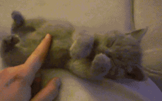
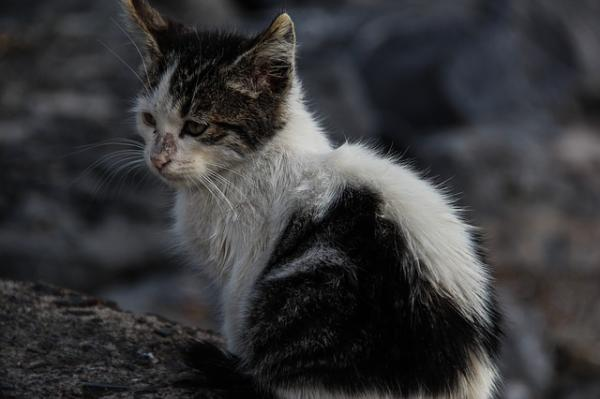
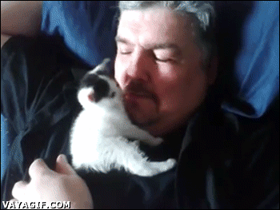
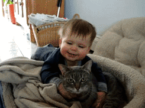
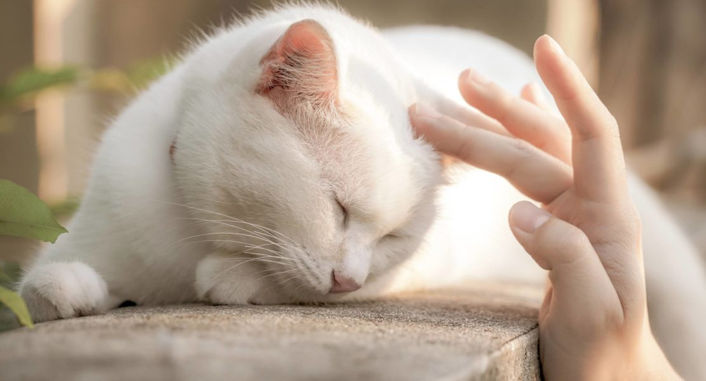

10 razones para adoptar un gato
Adoptar un gato callejero o un gato sin hogar en un refugio de animales es una experiencia maravillosa que
todo amante de los animales debería realizar alguna vez en su vida. No obstante, muchos se preguntan cuál de
estas opciones es la más indicada, qué pasos se deben seguir para adoptar un gato o qué ventajas supone
adoptar un gatito cachorro o en lugar de un gato adulto.

1. El abandono de gatos, un problema mundial

Según datos de la Fundación Affinity , en el año 2016 se registraron 33.335 abandonos de gatos domésticos
en España, aunque lo cierto es que probablemente se produjeran muchos más de los que no se tiene constancia.
De todos ellos, 2.333 fueron sacrificados y unos 15.000 acabaron siendo adoptados. Pero, ¿qué pasa con el
resto? Un 16% volvió con sus propietarios, un 20% falleció, fue entregado a una casa de acogida o devuelto a
una colona y el 12% restante permanecerá para siempre en un refugio. Estas cifras son iguales e incluso más
alarmantes en otros países, como en México, donde se producen casi 500.000 abandonos de perros y gatos al
año.
Es importante resaltar que no todos los gatos callejeros o sin hogar pueden integrarse en un hogar, ya que
los gatos ferales (aquellos que han vivido siempre en la calle y no están socializados) no se adaptarán
nunca a la convivencia con las personas o con otros animales. En estos casos se practica el "CES": capturar,
esterilizar y soltar.
En cualquier caso, ser conscientes de la gran cantidad de abandonos que se producen en el mundo es
fundamental para entender la importancia que representa la adopción. Además, el abandono genera un problema
de salud pública, afecta directamente al bienestar de los animales y fomenta la cría descontrolada.
2. La adopción puede evitar un sacrificio
Actualmente en España solo encontramos dos comunidades en las que existe la ley de sacrificio cero: Cataluña
y Madrid. No obstante, en el resto de la península Ibérica, es totalmente legal sacrificar animales,
especialmente cuando hablamos de gatos enfermos, de edad avanzada, con problemas de conducta o poco
adoptables.
Adoptar un gato, especialmente en alguna de las comunidades donde se sacrifican animales, nos asegura que
estamos salvando una vida y, además, estaremos dejando un espacio libre para que otro animal pueda entrar y
ser adoptado después del nuestro. Recuerda que en los refugios de animales y perreras podrás encontrar gatos
de cualquier edad, aspecto o carácter, pues incluso los gatos de raza son abandonados. ¡Ayudemos a
equilibrar las malas praxis del ser humano!
3. Tendrás un compañero único

Si bien los gatos de raza suelen ser muy deseables, lo cierto es que ellos suelen ser adoptados mucho antes,
por ese motivo, la mayoría de gatos abandonados en los refugios son mestizos. ¿Qué ventaja representa este
detalle? Para empezar, la mayoría de gatos de raza suelen tener predisposición a padecer ciertas
enfermedades hereditarias, lo que convierte a los mestizos en gatos más longevos.
Además, los gatos mestizos son únicos y poseen características físicas y comportamentales exclusivas en cada
individuo. ¿Tu también te consideras dueño de una personalidad única? ¿Posees un rasgo que te diferencia del
resto y estás orgulloso de ello? Entonces los gatos mestizos son para ti.
4. Cambiarás el mundo de un gato
Aunque muchas personas aseguren que los gatos son animales independientes, lo cierto es que se trata de seres
sociables, capaces de razonar y experimentar un amplio abanico de emociones. Por ese motivo, un gato en un
refugio es probable que se sienta abandonado, sin una figura de referencia a la que acudir y que experimente
altos niveles de estrés. Adoptar a un felino que se encuentre en este estado, le proporcionará el bienestar
emocional que necesita y hará que el tiempo que pase junto a ti se sienta feliz y amado.
5. Los gatos son beneficiosos para la salud

Aunque esta afirmación pueda resultar algo dudosa, lo cierto es que son muchos los estudios que demuestran
que tener un gato es beneficioso para la salud de los humanos. Tener un gato mejora nuestro estado de ánimo,
aumenta nuestra autoestima, previene alergias en los niños y llega a reducir el riesgo de muerte por infarto
hasta en un 30%. Increíble, ¿cierto?
6. Un compañero de juegos excelente para los niños
Adoptar un gato es una experiencia muy enriquecedora para un niño, puesto que le enseña la importancia de la
adopción, le inicia en el cuidado de los animales, las responsabilidades, la empatía y la tenencia
responsable. No olvidemos que nosotros, como adultos, debemos enseñar a los pequeños a relacionarse de forma
positiva con los animales y que nuestras acciones serán un ejemplo para ellos.
7. Razones para adoptar un gato negro
¿Sabías que los gatos negros son los que menos probabilidades tienen de ser adoptados? Eso es debido, en
parte, a que los gatos de color negro se asocian a la mala suerte. Esta creencia popular es fruto de la
ignorancia, pues los gatos negros no traen mala suerte, es un mito. Por tanto, puestos a adoptar, podemos
centrarnos en uno de los grupos de gatos en adopción más vulnerable de todos: los gatos de color negro. De acuerdo a distintas organizaciones protectoras de animales, en el mes de octubre no hay que regalar animales blancos o negros porque puede resultar “una sentencia de muerte para ellos”. Tristemente la demanda de estos animales crece llegada esta fecha y algunos incluso hasta desaparecen de sus casas.
8. Las ventajas de adoptar un gato con respecto a un perro
Los gatos son animales especialmente limpios, se adaptan a prácticamente cualquier hogar, saben racionar su
alimento y no necesitan salir a pasear (¡aunque algunos tutores sí pasean a sus gatos!). Sin duda estas
características hacen que muchas personas elijan tener un gato antes que un perro, no obstante, debemos
señalar ellos también necesitan atención veterinaria, socializar y no pueden quedarse más de un día solos en
casa, como algunas personas creen, pues necesitan compañía. Si nos marchamos, debemos asegurarnos de que una
persona de confianza pueda acudir a nuestro hogar para asegurar que todo marcha bien.
Además, para evitar la aparición de problemas del comportamiento, debemos estimular a nuestro gato para que
juegue, enriquecer su ambiente con juguetes y accesorios y asegurar que su alimentación es de buena calidad.
Si bien la tenencia de un gato es más ventajosa que la de un perro, especialmente para aquellas personas que
tienen poco tiempo o no quieren salir a pasear con sus animales, debemos proporcionarles igualmente buenos
cuidados.
9. Ventajas de adoptar un gato adulto vs ventajas de adoptar un gato cachorro

Existen algunas ventajas de adoptar un gato cachorro que es importante conocer, por ejemplo, podemos asegurar
que su socialización sea la adecuada, son tiernos y les acompañaremos durante más tiempo. No obstante,
también es importante señalar algunas ventajas de la adopción de un gato adulto, como el hecho de tener una
personalidad definida, que ya saben utilizar el arenero y el rascador, lo cual asegurará una mejor
adaptación al hogar, y la elección de un gato acorde con nuestro estilo de vida.
Aprovechamos para recordar también que los gatos adultos, ancianos o con problemas físicos son los que
tienen menos probabilidades de ser adoptados. ¿Por qué no darles una segunda oportunidad a ellos también?
10. Los gatos son geniales
Los gatos son animales poseedores de un carácter único, pues cada individuo es totalmente singular y distinto
a los demás. Pueden ser dormilones, activos, juguetones, cariñosos o algo huraños, pero cualquiera de estas
personalidades puede resultar perfecta si encaja con nuestra propia identidad, ¿no crees?
Pero, ¿cómo podemos conocer la personalidad de un gato de refugio o callejero? En cualquier caso,
relacionarnos con él va a ser imprescindible, pero no olvidemos que las primeras impresiones pueden ser algo
distorsionadas, en la mayoría de casos por la desconfianza que pueden tener hacia las personas por las
experiencias vividas. Por ese motivo, te aconsejamos consultar con un voluntario o responsable del centro,
intentar relacionarnos con él varias veces antes de llevarlo a casa e intentar que la primera impresión sea
lo más positiva posible, quizás con la ayuda de algún premio.
Los gatos son tan geniales que, incluso, puedes enamorarte de una pareja de hermanos o de gatos que hayan
convivido juntos anteriormente y que hayan sido abandonados. Si hay algo mejor que adoptar a un gato sin
duda es adoptar a dos gatos amigos, así el proceso de adaptación será muchísimo más positivo.
Consejos para adoptar gatos
Es importante que consideremos algunos detalles previos antes de adoptar a un gato de la calle o de un
refugio, para asegurar que su llegada al hogar será la adecuada y que estamos preparados para ser unos
buenos tutores.
Algunos pasos para adoptar un gato que debemos tener en cuenta:
- Si tenemos otros gatos en casa será imprescindible que, antes de llevar al nuevo gato a nuestro hogar,
visitemos a un veterinario para descartar parásitos y cualquier enfermedad contagiosa.
- Así mismo, si tenemos otros animales, debemos consultar previamente cómo debe ser la presentación de
ambos para evitar una asociación negativa desde un principio.
- Existen algunos consejos para adoptar a un gato de la calle que debemos conocer, como que su adaptación
puede ser más lenta o que insistirá en salir a la calle (cuidado, no hablamos de gatos ferales) por lo
que debemos comprender sus necesidades e intentar que el nuevo estilo de vida sea mucho más positivo
para él.
- Antes de la llegada del gato al hogar debemos tener listos todos sus elementos: comida, caja de arena,
agua, rascadores, cama, nido, juguetes, estructuras para gatos... No esperes que tu gato llegue a casa
para comprar todo lo necesario.
- También será básico conocer el lenguaje y la comunicación de los gatos para poder comprenderle, cómo
hacer uso del refuerzo positivo para incentivar un buen comportamiento y muchos otras curiosidades sobre
los gatos que puedes descubrir en ExpertoAnimal.